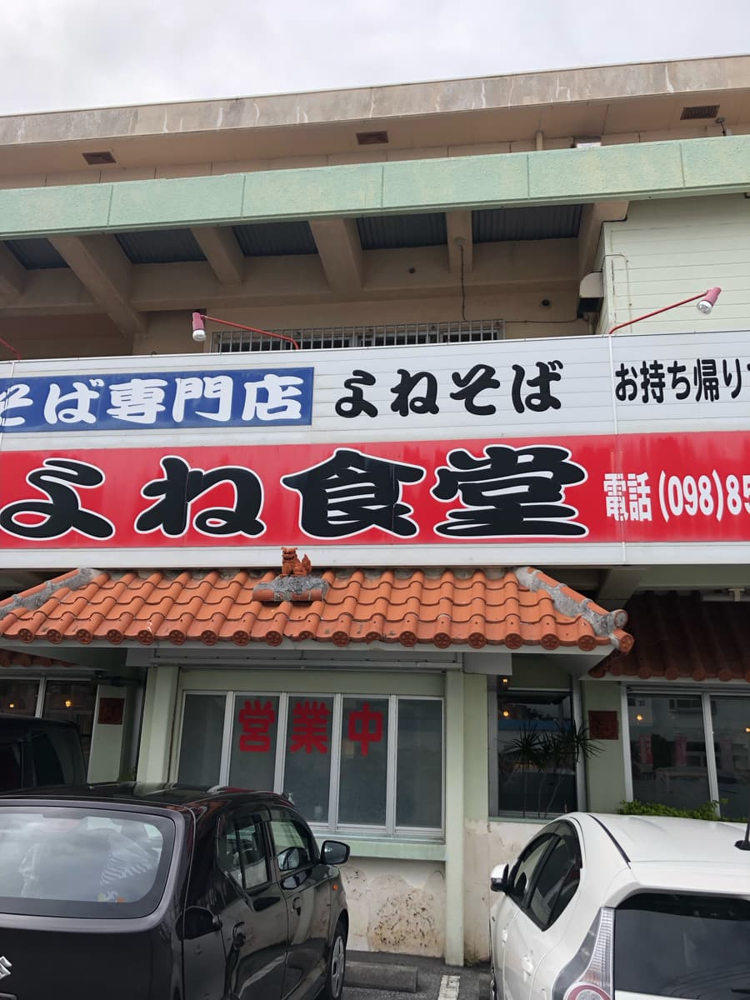
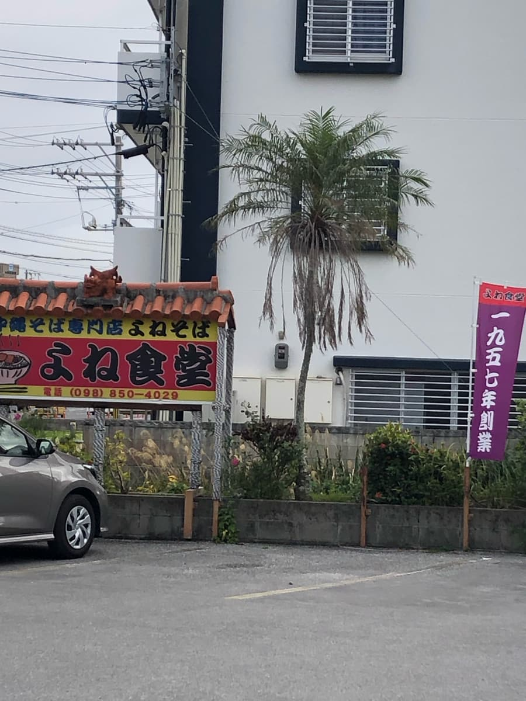
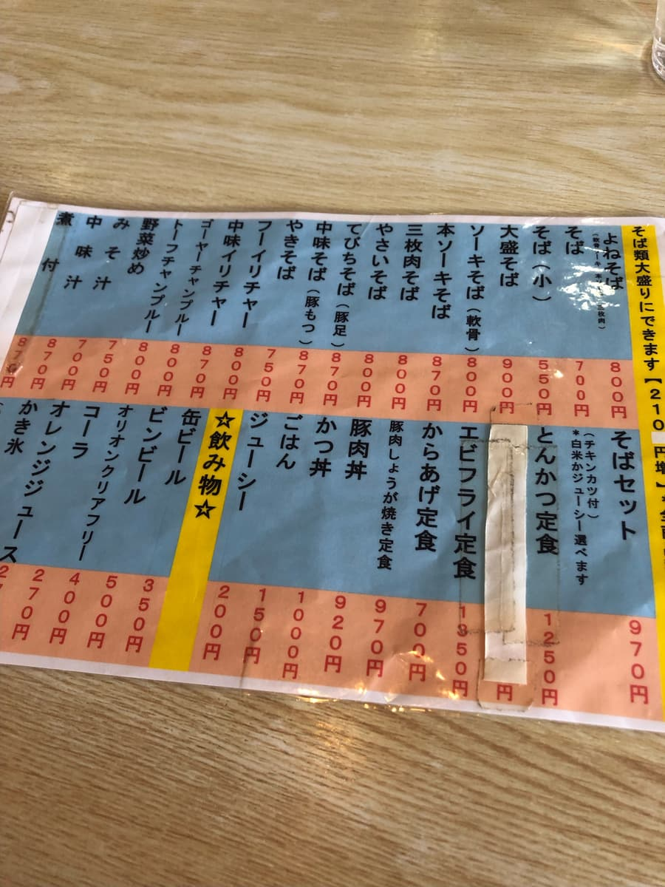
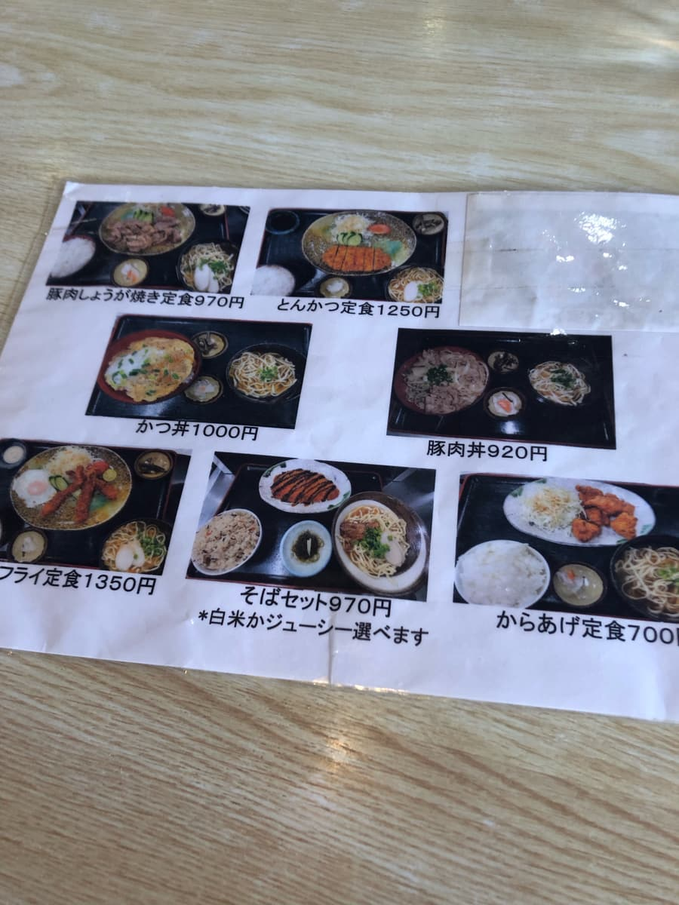
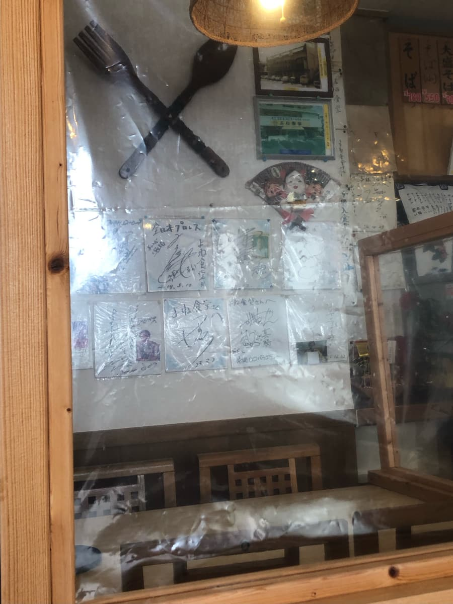
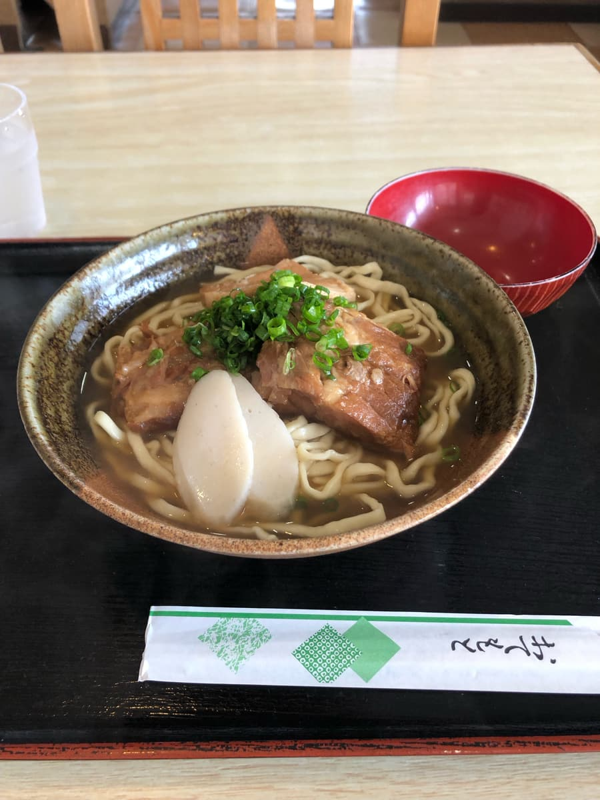
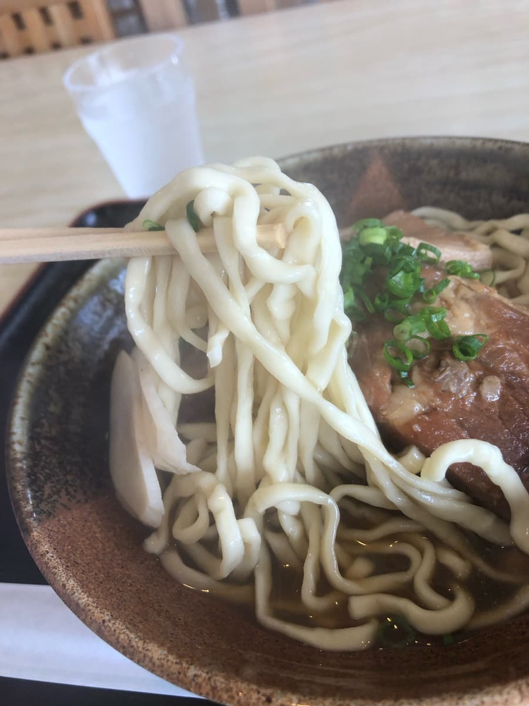

2024.2に食べました😁



店名と同じ「よねそば」があったので注文。具材は軟骨ソーキ、本ソーキ、三枚肉と全部のせ的な感じですね😆


店内には、著名人のサインが貼ってありましたが、誰のサインか良く見えませんでした(^0^;) 「全日本プロレス」とあるのでどなたかのプロレスラーと、おそらく具志堅用高さんのサインも下に見えます😆

「よねそば」来ました。まずはスープを一飲みです。鶏と豚の両方が感じられるようなスープです。

次に麺を頂きます。中細麺のゆるい縮れタイプで、柔らかい麺ですね。
具の三枚肉、本ソーキ、軟骨ソーキも柔らかいですが、筋感がある感じです。
評価（9点/15点）：普通に美味しいです。那覇空港にも比較的近い場所ですので、老舗の味を一度は味わってみてはどうでしょうか😁
麺 ：★★★☆☆（3）
スープ：★★★☆☆（3）
具 ：★★★☆☆（3）